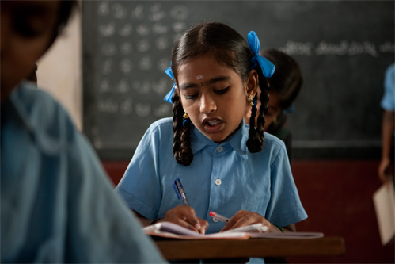

Category
NEWS
->Akshaya Patra is a model of cooperation and scale that you have accomplished and demonstrated. It is better than any other model in the world. US Congressman Joseph Kennedy , III (D-MA) of Massachusetts->Akshaya Patra's blue bus is a symbol of hope for the thousands of children across the country. The bus signifies that the child will not go hungry and we thought that the best way to be a part of this programme is by donating the vehicle. S R Bansal, Chairman and Managing Director Corporation Bank
Our Work
Akshaya Patra is a non-profit organisation that operates on a Public-Private-Partnership model. implementing partner of the Mid-Day Meal Scheme, there is a steady support from the Government of India, the various State Governments and associated organisations. This has enabled the programme to grow from feeding 1,500 children in the year 2000 to 1.39 million children in 2014. Akshaya Patra, with part support from the Government, also depends on corporate funds, philanthropic donors, volunteers and well-wishers for managing such massive operation. The nitty-gritty of the operations include the technological innovations, quality standards, delivery vehicles and interacting with various stakeholders, to name a few. The organisation is highly transparent and makes available not only the financial information but also intellectual property to the public. The organisation is of the belief that there is a dire need for the operations of Akshaya Patra to be replicated so that it realises the vision that “No child in India shall be deprived of education because of hunger.” And hence make available all information to organisations, Government and other enthusiasts.